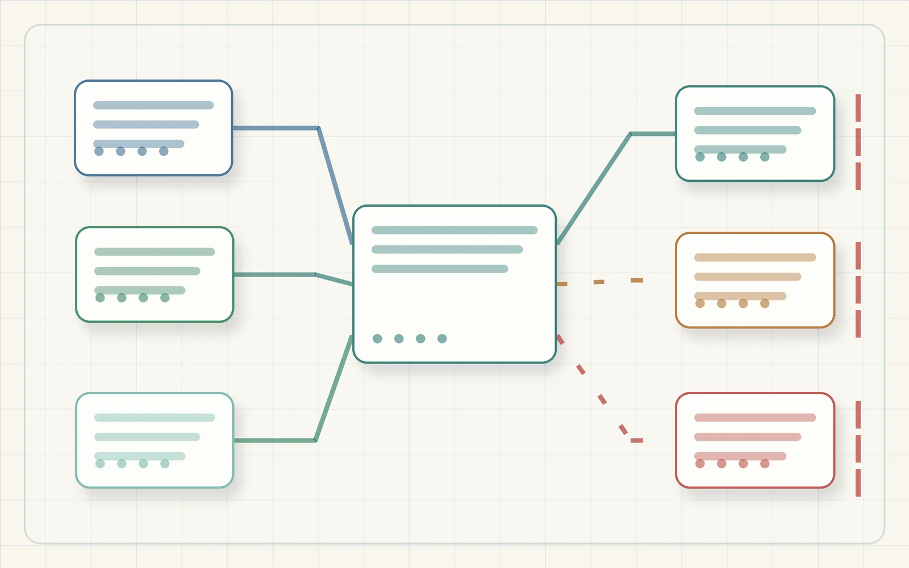
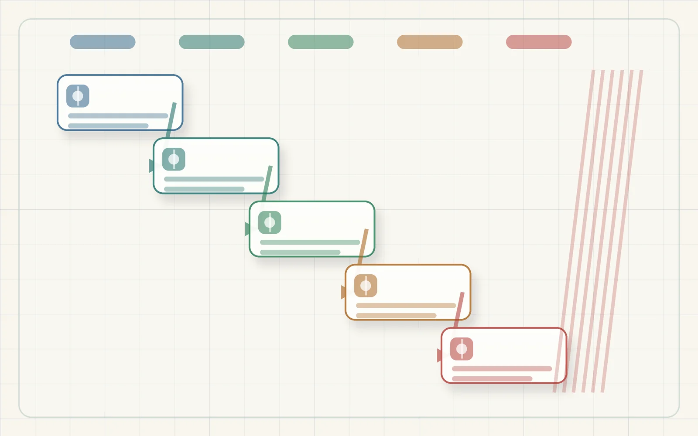
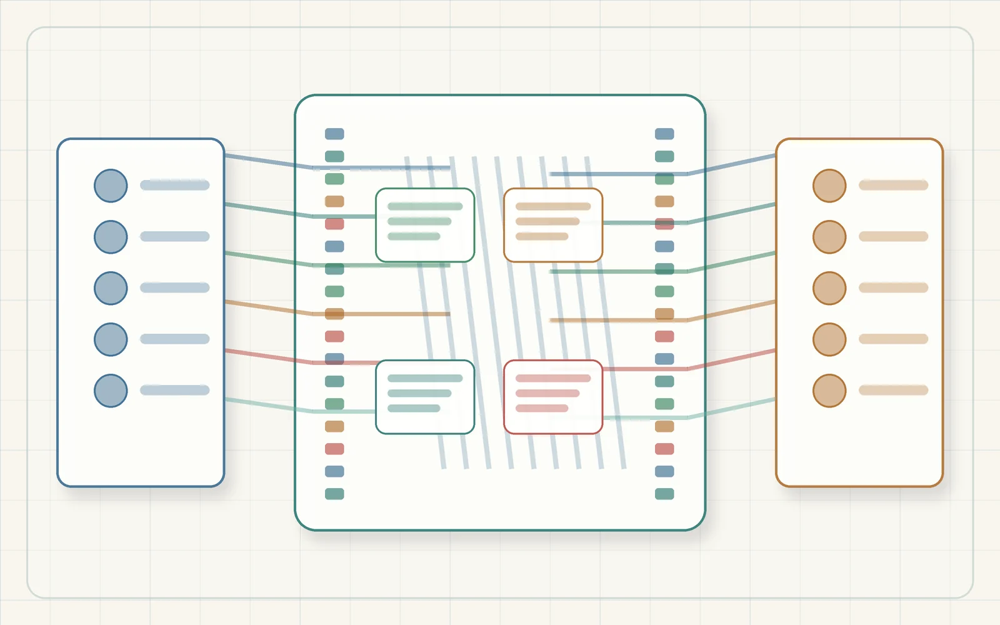

Power
Single input source, jumper state, current limit, rail behavior, reset timing, and boot-pin review.
Open power gatesPrototype Build Packet
This packet gathers the current component map, provisional signal map, review sequence, branch gates, source links, unresolved gaps, and stop conditions without turning the public site into wiring instructions.



Branch gates
Single input source, jumper state, current limit, rail behavior, reset timing, and boot-pin review.
Open power gatesExact module identity, trigger polarity, input current, voltage behavior, jumper behavior, and isolation.
Open relay sequencePC-side passive discovery and fixed read-only AT queries before any write or carrier review.
Open XBee boundaryExact modules, power, pullups, bus needs, touch/backlight details, and shared pin conflicts.
Open pin planMux input-only proof and expander LED or logic-analyzer proof before relay-module inputs.
Open researchSeparate qualified review package before any load or mains design is written.
Open mains gateEvidence checklist
The checked-in packet lists required records for board/shield, relay input behavior, XBee discovery, storage, TFT, mux, expander, public bundle safety, and qualified load review.